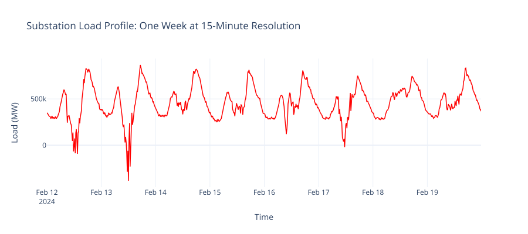
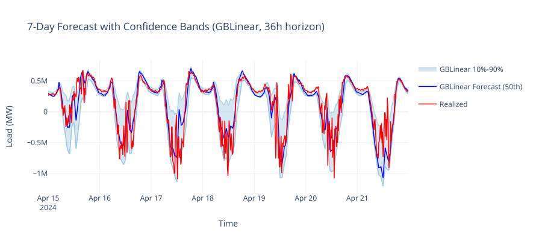
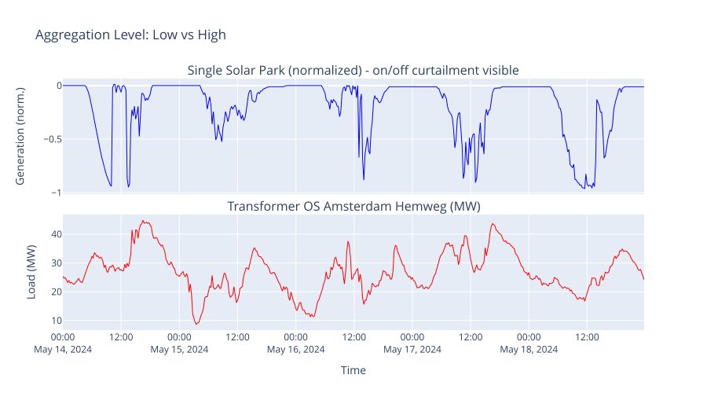

Intro to Energy Forecasting#
Electricity supply and demand must balance at every moment, yet the grid has physical capacity limits. Short-term energy forecasting predicts load and generation hours to days ahead so operators can act before problems occur. This page explains the domain concepts that OpenSTEF builds on: what gets forecasted, why it matters, and what makes it challenging.
What Is Short-Term Energy Forecasting?#
Short-term energy forecasting (STEF) is the task of predicting electrical load or generation at specific points in the grid over horizons ranging from 15 minutes to approximately 7 days. Grid operators rely on these forecasts to make operational decisions: managing congestion, planning transport capacity, coordinating with upstream and downstream network operators, and minimizing grid losses.
Unlike long-term planning (months to years), short-term forecasting must be:
Granular - typically at 15-minute resolution
Frequent - updated multiple times per day as new data arrives
Actionable - accurate enough to trigger real operational decisions
Use Cases#
Different grid objectives require different models, aggregation levels, and accuracy targets. OpenSTEF supports a wide range of operational use cases:
Use Case |
Description |
|---|---|
Congestion Forecasting |
Predict when substations approach capacity limits one to two days ahead. Operators activate pre-emptive flexibility (demand response, battery dispatch) rather than reacting to emergencies. |
Transport Forecasts |
Distribution operators send day-ahead load forecasts to the transmission operator for each coupling point. Must be accurate across every hour of the day. |
Grid Loss Forecasting |
Estimate total losses in transformers and cables for day-ahead energy market procurement. Grid operators must buy energy to compensate for losses; accurate forecasts reduce over- or under-procurement and lower costs. |
Free-Space Forecasting |
Predict available headroom at specific hours to allocate unused capacity to flexible loads like EV charging. Increases infrastructure utilization without creating new overload risks. |
MV Route Monitoring |
Forecasts fill in missing real-time data so that grid state estimation models can assess cable loading across entire medium-voltage routes. |
District Heating |
Forecast heat demand at city scale for production unit scheduling, heat accumulator planning, and maintenance coordination. Temperature is a major driver alongside social patterns. |
Input Signals#
Energy demand and generation are driven by a combination of physical, behavioural, and economic factors:
Signal |
Why It Matters |
|---|---|
Load history |
Energy demand is highly auto-correlated. Last Monday’s load is the best predictor of this Monday’s load. |
Weather forecasts |
Temperature drives heating/cooling demand; radiation and wind drive renewable generation. |
Calendar features |
Human behaviour follows daily, weekly, and holiday patterns (e.g., evening peak between 17:00 and 20:00). |
Market prices |
Energy prices influence behaviour. Wind parks may shut down at negative prices; industrial users shift load in response to tariffs. |
Note
Weather forecasts are versioned: the forecast for Monday issued on Saturday differs from the one issued on Sunday. Standard lag features ignore this distinction, which is why OpenSTEF provides specialized versioned lag handling.

A typical substation load profile. Daily peaks (morning and evening) and a clear weekday/weekend difference are the patterns that forecasting models learn to capture.#
Forecast Horizons#
The forecast horizon (or lead time) is the time gap between when a prediction is made and the period it covers. OpenSTEF supports horizons from 15 minutes to approximately 7 days.
A critical constraint: lags must respect the forecast horizon. If you are forecasting 36 hours ahead, you cannot use data from 24 hours ago because it will not be available at prediction time. OpenSTEF’s lag transforms enforce this automatically.
Accuracy degrades with increasing lead time for fundamental reasons:
Weather forecast quality drops - beyond 7 days, weather models lack the 15-minute resolution needed for solar/wind peaks
Behavioural uncertainty compounds - unpredictable events become more likely over longer windows
Auto-correlation weakens - the further ahead you look, the less today’s load tells you about future load

A real 7-day forecast produced by OpenSTEF’s GBLinear model. The shaded P10-P90 band captures 80% of expected outcomes. Forecast skill degrades with increasing lead time as weather and behavioural uncertainty compound.#
This is why OpenSTEF treats horizon as a first-class concept throughout its pipeline, from feature construction to model training to evaluation.
Challenges in the Field#
Energy forecasting is not a clean textbook regression problem. Practitioners face several domain-specific difficulties:
Unpredictable behaviour#
Some energy users and generators behave in ways that are difficult to model from historical patterns alone:
Wind parks shutting down at negative market prices - generation drops to zero not because of weather, but because of economic signals
Maintenance events - planned or unplanned outages cause sudden load changes
Behind-the-meter solar and storage - invisible generation that changes the apparent load profile
New connections or disconnections - the underlying capacity of a grid point changes over time
Aggregation level effects#
A fundamental principle: higher aggregation levels are generally easier to forecast. Individual customer behaviour is erratic, but the aggregate of thousands of customers follows smooth, predictable patterns. This means:
Substation-level forecasts (many customers) are more predictable than individual customer forecasts
System-level patterns (temporal, cyclic) dominate at high aggregation, while weather effects diminish
Low-aggregation forecasts require different optimization strategies (e.g., emphasis on peak detection rather than average accuracy)

Low aggregation (single solar park near Rotterdam) shows clear on/off curtailment - generation switches between full output and zero multiple times per day despite available sunshine. High aggregation (Amsterdam Hemweg transformer, ~50 MW peak) produces smooth, repeating daily patterns that models capture well.#
OpenSTEF supports use cases across the full aggregation spectrum, from highly aggregated grid loss forecasting to individual customer predictions for congestion management.
Data quality as the binding constraint#
In practice, feature quality and data quality are the primary determinants of forecast accuracy, often more so than model choice. Common issues include:
Missing or delayed measurements from SCADA systems
Weather forecast providers changing their model or grid resolution
Incorrect meter configurations reporting wrong values
Capacity changes not reflected in historical data
Warning
“Garbage in, garbage out” applies strongly to energy forecasting. Before investing time in model tuning, verify that your input data is complete, correctly timestamped, and representative of current grid conditions.
See also
Models for which model types are available and when to use each.
Component Splitting for how forecasts can be decomposed into solar, wind, and other components.
Forecasting for a practical guide to building your first forecast pipeline.
Feature Engineering for Energy Forecasting for a hands-on tutorial demonstrating feature transforms.